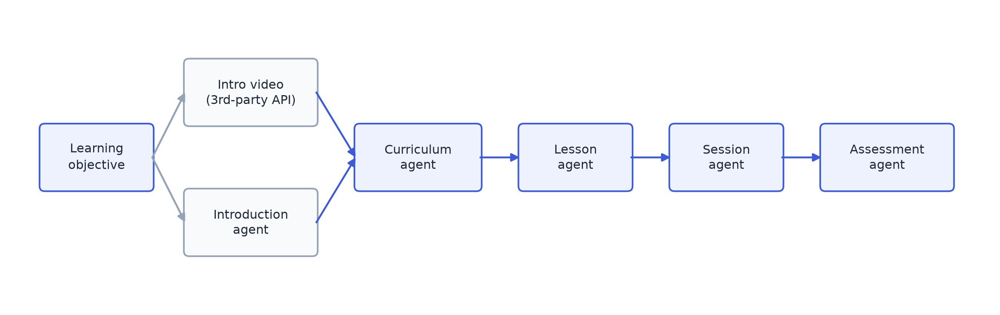

GenAI Course-Builder
An agent pipeline that turns a learning objective and an age group into a full, publishable course — intro, curriculum, lessons, sessions, and a rubric-graded assessment.
Challenge
The brief was: give it a learning objective and an age group, and it generates a full course — intro, curriculum, lessons, sessions, an assessment — good enough to actually publish, not just a draft someone has to rewrite. That meant the output had to be consistent, gradeable, and reliable enough to ship without a human rewrite pass every time.
Architecture & design
I built this as a chain of agents rather than one big prompt. A planning agent lays out the curriculum, then separate agents handle lessons, sessions, and the assessment, each picking up from what the last one produced. Alongside that, a short intro video gets generated through a third-party API, and a dedicated agent writes the slide that introduces the objective to the learner.

Underneath the agents is a generation engine that handles the less glamorous but more consequential decisions — the part that's less interesting to diagram, but is most of what actually made the system reliable in production.
Approach & key decisions
Keeping a five-stage pipeline from breaking itself
Each agent's output gets validated against a schema before the next one touches it, so a malformed curriculum can't quietly turn into a broken lesson two stages later.
Not blocking on a slow pipeline
A full course can take a while to generate, so the whole thing runs as a background job and the app gets a callback when it's actually done, rather than making a request sit and wait.
Reusing vetted content instead of regenerating it
If a rubric already has a hand-written, vetted outcome, that gets reused instead of asking the model to reinvent it — no reason to spend tokens regenerating something that's already correct.
Failing clean, and never losing a working version
If the model's unreachable, the module fails cleanly instead of half-generating something broken. Every regeneration is saved as a new version instead of overwriting the last one, so one bad run can't cost you the version that worked.
Closing the loop with evaluation
Once a learner submits answers, they're scored against the same rubric the assessment was built from — point by point, not just right-or-wrong — so the feedback is actually specific about what they did or didn't demonstrate.